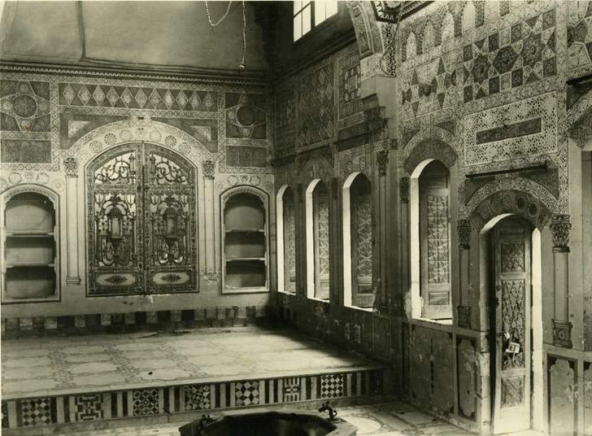
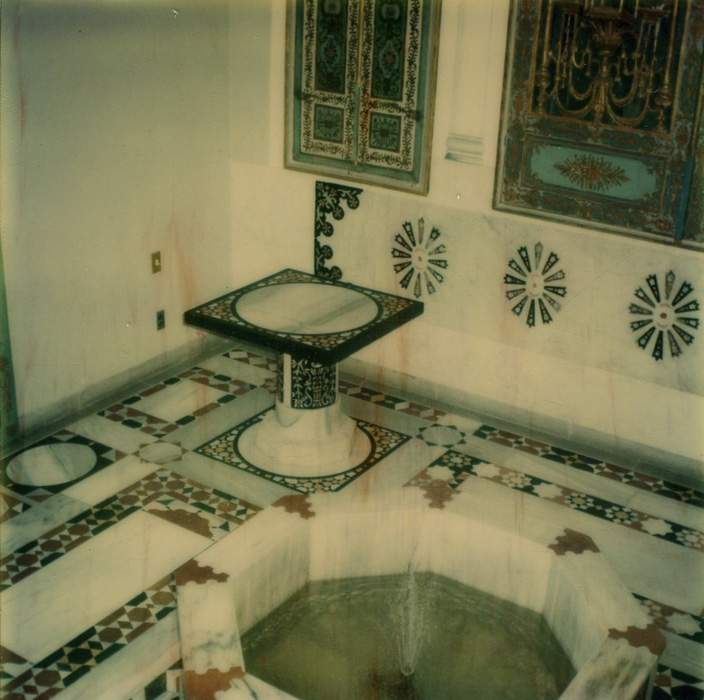

< RETURN TO LATE-OTTOMAN SYRIAN INTERIORS AND FURNISHINGS
Quwatli House
Press play to hear the fountain.

Qa'a (Arabic: hall) of the so-called "Quwatli" house, Damascus, with the gilded doors now on view in the large Syrian Room, before 1934. Shangri La Historical Archives, Doris Duke Foundation for Islamic Art, Honolulu, Hawai'i.
Two decades after acquiring and installing the Damascus Room at Shangri La, Doris Duke (1912–93) set her sights on a second late-Ottoman Syrian interior. In this instance, her source was New York University, where a number of Syrian architectural elements had been on display since 1975 in the lobby and library of the Hagop Kevorkian Center for Near Eastern Studies. These elements had been shipped to New York in 1934, after Hagop Kevorkian (1872–1962) acquired them from the antiquities firm Asfar & Sarkis. They were said to have come from a house owned by the Quwatlis, a prominent merchant family of Damascus (this association remains to be confirmed). At the same time, Kevorkian also purchased the so-called “Nur al-Din” interior, an exceptional qa‘a (reception room) now in the Metropolitan Museum of Art.
In 1976, Duke acquired a variety of components that had been on view in the Kevorkian Center, as well as additional ones preserved in NYU storage. These included two pairs of gilded mirrored doors, a faceted hood of a niche (masabb), the panels framing open-air vitrines, closed cupboards, doors, an intact beam ceiling with four corner squinches, border elements from two more ceilings, stonework and pastework (ablaq) embellishment for walls, and marble flooring and fountain elements (see thumbnails of these elements below). From photographs preserved in the Metropolitan Museum of Art, the Shangri La Historical Archives, and at New York University, it is possible to identify the locations of many of these elements in the so-called Quwatli house prior to its dismantlement. Many were located in a qa‘a featuring a lower entry area (‘ataba) and two flanking upper seating areas (tazar) (Baumeister et al. forthcoming). For example, the rear walls of these two tazars were once home to the two pairs of gilded doors now on view in the large Syrian Room (64.9.1 and 64.9.2); the original entrance of the qa‘a is now the door of the same room’s utility closet (64.10a–b); and the stonework arcade above the original entrance now adorns the east wall of the small Syrian Room (41.3).

Elements from NYU's Hagop Kevorkian Center for Near Eastern Studies, including perhaps the black marble panels on the side of this table, were incorporated into Doris Duke's Syrian Room. Shangri La Historical Archives, Doris Duke Foundation for Islamic Art, Honolulu, Hawai'i.
Whereas the wood paneling of the Damascus Room was mocked-up to size in Damascus by the al-Khayyat workshop and sent to Doris Duke with explicit instructions on how to reinstall it, the collector and her staff had to create the Syrian Room from scratch. The individual pieces acquired from NYU did not seamlessly combine to fit a space that had once been two separate rooms: an office and billiard room. Rather, Duke and her staff needed to fill in a number of gaps and recreate important elements. The masabb in the smaller room is an excellent example. In this case, Duke had acquired only the faceted hood and the marble framework (64.18) from NYU. She then filled the central third of the niche with a Syrian tile panel acquired separately (48.41a–b).
 Hagop Kevorkian's "Nur al-Din" room, with marked elements including 64.17.1-2 and 41.4, 1954. Doris Duke purchased the
Hagop Kevorkian's "Nur al-Din" room, with marked elements including 64.17.1-2 and 41.4, 1954. Doris Duke purchased the 'ajami
floral and fruit panels and the riser separating the 'ataba
and tazar
c. 1979. Shangri La Historical Archives, Doris Duke Foundation for Islamic Art, Honolulu, Hawai'i.Duke’s commitment to recreating canonical elements of the Syrian qa‘a speaks volumes about her desire to present as complete a period room as possible. Although the Syrian Room at Shangri La can never be confused with an authentic Syrian qa‘a, the spatial layout of the large room, in particular, and the inclusion and placement of diverse media (glass, stone, wood) and features (fountain, masabb, ceiling, windows) create an atmosphere that alludes to what such interiors are like in situ. Duke achieved this overall impact and context through the combination of old and new, Syrian and otherwise (consider the inclusion of Moroccan and Persian windows; 46.4).
Additional elements in the Syrian Room have an altogether different provenance. The room’s pair of vertical ‘ajami panels (64.17.1–2) and marble wall element (41.4) are associated not with the so-called Quwatli house but rather with the Metropolitan’s “Damascus Room.” In the spring of 1954, Hagop Kevorkian sent Duke an in situ photograph of this interior (then known as the “Nur al-Din” room). Duke’s interest in the interior was piqued, and either she, or someone at the Kevorkian Foundation, marked the ‘ajami panels and the marble element (which served as the riser between the ‘ataba and tazar). Over two decades later, in 1979, these “Nur al-Din” elements were shipped to Honolulu and installed in the Syrian Room alongside “Quwatli” elements.
Although the Damascus Room and Syrian Room are noticeably different in terms of media and layout, the twentieth-century “biographies” of both interiors are deeply intertwined. In 1934, the al-Khayyat workshop participated in the dismantlement of the so-called Quwatli home (Baumeister et al. forthcoming). Two decades later they custom-made the Damascus Room for Shangri La, and another 25 years later, elements of the “Quwatli” home were installed in the Syrian Room. Throughout their endeavors, the al-Khayyats seem to have collaborated closely with Asfar & Sarkis, with whom Duke sustained a lengthy working relationship from 1938 through the 1970s (in later decades, she worked with descendants of Georges Asfar and Jean Sarkis). Given their interrelated and complex histories, the two Damascene rooms at Shangri La occupy a critical role in the historiography of Syrian interiors during the twentieth century. In Honolulu, the well-documented relationship between collector, dealer and artisan has ramifications for the understanding of similar interiors in situ and abroad.
The DDFIA thanks the following individuals for sharing information and insights that improved understanding of the Syrian Room: Anke Scharrahs, Mecka Baumeister, Beth Edelstein.
Recommended citation:
Doris Duke Foundation for Islamic Art (Overton), “Late-Ottoman Syrian Interiors and Furnishings: Syrian Room,” Collection Highlights, Shangri La: A Center for Islamic Arts and Cultures, November 2012,www.shangrilahawaii.org.
Works Cited:
Mecka Baumeister, Beth Edelstein, Anke Scharrahs and Keelan Overton, co-authored article (forthcoming).
Further readings and resources
Online:
Mary McGinn, The Damascus Room in Context: Acquisition, Furnishings and Conservation, Colloquium participant, Shangri La: A Center for Islamic Arts and Cultures, June 27–28, 2012.
Discoveries: New Research on the Collections of the Department of Islamic Art at the Metropolitan Museum, Part IV: The Damascus Room (symposium, Metropolitan Museum of Art, New York, NY, April 12, 2012).
Ellen Kenney, “The Damascus Room,” in Heilbrunn Timeline of Art History (New York: The Metropolitan Museum of Art, 2000–), The Metropolitan Museum of Art, October 2011.
The Hagop Kevorkian Center for Near Eastern Studies, New York University.
Print:
Anke Scharrahs, Damascene ‘ajami Rooms: Forgotten Jewels of Interior Design (London: Archetype Publications, 2013).